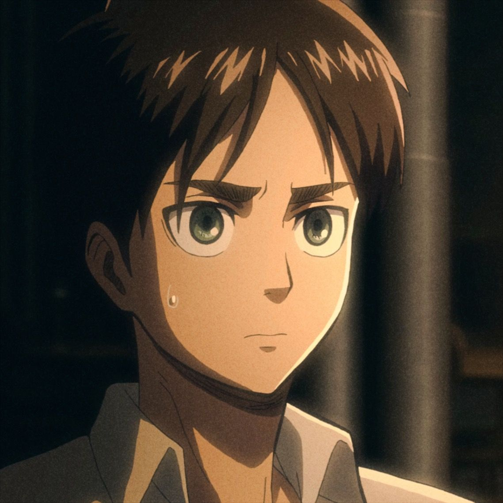
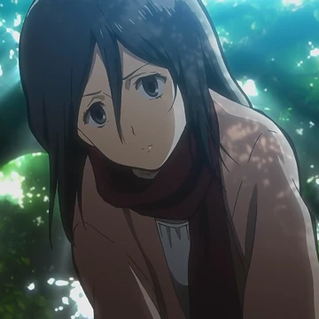
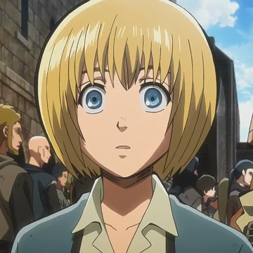

attack on titan is a show and people have to survive from titans to
prevent the tintans to getting to the people 3 walls were built. The
walls names were based named after the three daughters of Ymir Fritz,
Wall Maria (the outermost wall), Wall Rose (the middle wall), and Wall
Sina (the innermost wall).
Characters
Eren Yeager
Eren Yeager has one of the most interesting background stories in Attack
on Titan, growing up inside Wall Maria with his parents, Grisha and Carla,
and his adopted sister, Mikasa Ackerman. In the year 845, his life changed
forever when two special enemies, the Colossal Titan and the Armored Titan
kicked a big hole in the wall, which let mindless Titans just enter the
city and eat Eren's mother right in front of him. What Eren did not know
was that his father, Grisha, actually came from a secret country outside
the walls called Marley and already held the power of the Attack Titan.
Right as the walls fell, Grisha stole a second power, the Founding Titan,
by fighting and eating Frieda Reiss in a secret underground church. To
keep these powers safe from their the people attacking from marley, Grisha
took young Eren into the Forest at night and injected him with a serum
that turned him into a mindless Titan. Eren immediately ate his own
father, inheriting both the Attack and Founding Titans. Because the
experience was so traumatic, Eren's mind blocked out the memory, and he
completely forgot he had these powers. After all of that Erens mind had
fully changed now instead of wanting to hide and be safe he wanted the
whole war to end and he wanted to reach freedom which ment fighting every
single titan he would see and he just wanted it all to end and acheive
freedom not only for himself but for everyone living inside of all the
walls , Eren joined the 104th Cadet Corps in the year 850 alongside Mikasa
and their best friend, Armin Arlert. later on something so tragic happend,
when Eren was swallowed whole by a Titan while saving Armin's life, after
he was swallowed and his powers finally woke up, causing him to transform
from the inside out and suprising everyone who thought he was dead. When
he came out of the titan cause he ran out of energy he was taken and
locked up somewher safe because he could be used to help the scouts in the
titan war. Eren was still learning his titan powers so he accidently ended
up attacking Mikasa while in titan form. So he was locked up again until
he could controll himself. Later on he was trusted by everyone and was
free from the prision. He was in the hands of Levi ackerman who was the
stongest solder and Eren had to follow all his commands. thats how it was
until near the end of the story where alot of stuff happend

fun fact about Eren Yeager
Saved 20% of the whole world
Has the most titan eliminations
top 5 ODM gear users
Mikasa Ackerman
Mikasa story is pretty sad she grew up with her own parents but when she
was 9 her parents got kidnapped and Eren found her in th middle of a
forest. When Eren met her some people started knocking on the door and
they opened it and 3 people came in trying to take them. But Eren did not
let that happen he took 2 of them down but he got pinned by the 3rd guy
While pinned he told Mikasa "if you dont fight you die". With that Mikasa
Ackerman powers awakend and she took the last guy down. Theackerman powers
are the strongest powers in the shows there are 2 ackerman and those 2 are
the strongest ackermans including Mikasa. After they both escaped and Eren
wraped a scarf around Mikasa and that Scarf stayed with her untill the end
of the story. Right after Erens dad found them both and took them home.
(all of this happend before Eren got the power of the founding and attack
titan. This was while they were young kids). After that day Mikasa vowed
to protect Eren no matter where he would go and what he would do. And she
did not stop with that untill the end of the story. Mikasa joined the
scout regiment and the survey corps just for Eren and their best friend
arin so they could save their town.

Fun facts about Mikasa Ackerman
She had to take eren out to save their town even tho she vowed to
protect him
she was a top 2 fighter after Levi Ackerman
she is part of The Azumabito Clan which is a strong clan
Armin Arlert
Armin is a genius He is the one that that made all of the important
choices in the story. Everyone made him the leader because after their
origin leader died (commander Erwin Smith) they needed someone who had the
same intelligence and critical thinking to lead them forward. Armin also
dies but then comes back to life after getting injected with titan serum.
That turned him into a mindless titan and he ate the person with the titan
power of the collosal. Armin also joined the scout regiment and the survey
corps for Eren and his best friend Mikasa so they could save their town.
Armin was the one that told Eren and mikasa that far far bryond the walls
theres a place with a massive ocean. After that all 3 of them kept on
pushing to their goal and finnaly made it when Eren said "If we cross the
sea... and kill all our enemies over there... will we finally... be
free?". That quote ment that Eren was not done yet and he wanted revenge
on his enemies that caused all of the problems with titans.

Fun facts about Armin Arlert
He has the power of one of the strongest titans known as the Colossal
Titan that he used to take eren ou tin the final battle
without Armin they would not have the best strategys because Armin
always can think of soemthing to help his comrades
Armin was the smartest person in the show
Titans
Titans are the main enemies in the show. They are giant people that eat
humans. Titans have no intelligence and they only want to eat humans.
Titans are the main reason why the people of the walls have to fight for
their lives. Titans come in all different sizes and shapes. Some titans
are small and some are huge. The largest titan is the colossal titan which
is 60 meters tall. The smallest titan is 3 meters tall. There are also
special titans that have special powers. The special titans are the
armored titan, the colossal titan, the beast titan, the female titan, the
jaw titan, and the war hammer titan.
the people who use the 9 titans
Eren Yeager - Attack Titan
Eren yeager - Founding Titan
Reiner Braun - Armored Titan
Bertholdt Hoover - Colossal Titan
Zeke Yeager - Beast Titan
Annie Leonhart - Female Titan
Porco Galliard -Jaw Titan
Lara Tybur - War Hammer Titan
Pieck Finger - The Cart Titan
Fun facts about the titans
the 9 titans are the strongest titans
the 9 titans are the only titans that can be passed down to other people
the 9 titans are the only titans that have special powers